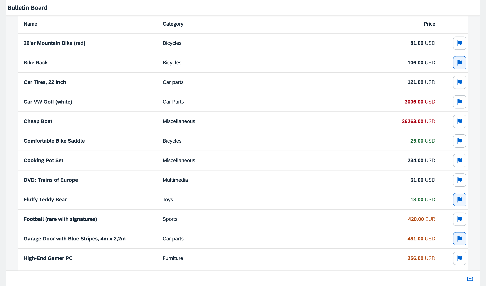

You can view and download all files in the Samples in the Demo Kit at Testing - Step 5.
sap.ui.define([
"sap/ui/model/SimpleType"
], function (SimpleType) {
"use strict";
return SimpleType.extend("sap.ui.demo.bulletinboard.model.FlaggedType", {
/**
* Formats the integer value from the model to a boolean for the pressed state of the flagged button
*
* @public
* @param {number} iFlagged the integer value of the formatted property
* @returns {boolean} 1 means true, all other numbers means false
*/
formatValue: function (iFlagged) {
return iFlagged === 1;
},
/**
* Parses a boolean value from the property to an integer
*
* @public
* @param {boolean} bFlagged true means flagged, false means not flagged
* @returns {number} true means 1 , false means 0
*/
parseValue: function (bFlagged) {
if (bFlagged) {
return 1;
}
return 0;
},
/**
* Validates the value to be parsed
*
* @public
* Since there is only true and false, no client side validation is required
* @returns {boolean} true
*/
validateValue: function () {
return true;
}
});
});Lets start with the implementation code for the FlaggedType. We now
add the documentation in JSDoc format and the implementation of the three functions
of the data type to the previously empty stub:
The formatValue function takes care of the conversion
from the model to the UI. As specified in the tests, a model value of
1 will be converted to true,
everything else to false. In the implementation code,
this equals to "iFlagged === 1".
Similarly, the parseValue function is called by OpenUI5 when
the data is written back to the model. Here, we convert the Boolean
value to an integer again.
The validation function always returns true in this
simple case, we do not expect any validation errors for this data
type.
We call these functions of the data type in the unit tests directly. So if you now run your
unit tests by opening webapp/test/testsuite.qunit.html in your
browser and select unit/unitTests, the tests should already run
successfully.
…
<Table …>
…
<columns>
…
<Column width="33%" id="unitNumberColumn" hAlign="End" vAlign="Middle">
<Text text="{i18n>TableUnitNumberColumnTitle}" id="unitNumberColumnTitle"/>
</Column>
<Column width="80px" id="flaggedColumn" demandPopin="true" vAlign="Middle"/>
</columns>
<items>
<ColumnListItem vAlign="Middle">
<cells>
…
<ObjectNumber… />
<ToggleButton
id="flaggedButton"
tooltip="{i18n>flaggedTooltip}"
icon="sap-icon://flag"
pressed="{
path: 'Flagged',
type: '.types.flagged'
}"
class="sapUiMediumMarginBeginEnd"/>
</cells>
</ColumnListItem>
</items>
</Table>
…In the view, we add a new column and a cell for the flag feature at the end of the
table. We fill the cell with a sap.m.ToggleButton control that
serves as our input control for the Flagged state. We define a
flag icon in the button, a tooltip from the resource bundle,
and a layouting class to make our example complete. The control's
pressed property is bound to the Flagged field
in the model. Here we also apply the custom data type that is part of the
controller.
sap.ui.define([ './BaseController', 'sap/ui/model/json/JSONModel', '../model/formatter', '../model/FlaggedType', 'sap/m/library' ], function (BaseController, JSONModel, formatter, FlaggedType, mobileLibrary) { "use strict"; return BaseController.extend("sap.ui.demo.bulletinboard.controller.Worklist", { types : { flagged: new FlaggedType() }, formatter: formatter, // … }); });
The controller loads the custom data type as a dependency similar to the formatters.
It is then provided as a property of the internal variable types so
that it can be accessed as .types.flagged in the view as we have
seen above.
The conversion functions that are made available when we create an instance of the type are called automatically by OpenUI5 when needed. However, by default the back conversion to the model is not enabled, so we still need a small change in the component.
sap.ui.define([
// …
], function (UIComponent, ResourceModel, models) {
"use strict";
return UIComponent.extend("sap.ui.demo.bulletinboard.Component", {
// …
init: function () {
// call the base component's init function
UIComponent.prototype.init.apply(this, arguments);
// allow saving values to the OData model
this.getModel().setDefaultBindingMode("TwoWay");
// …
}
});
});To enable the propagation of the bound view properties to the model, we need to set
the model's default binding mode to TwoWay. For an OData model the
default mode is OneWay which means that properties are not written
back to the model automatically. We want to propagate the state of the button
automatically to the model, when the button for a post is clicked.
#~~~ Worklist View ~~~~~~~~~~~~~~~~~~~~~~~~~~
…
#XTOL: tooltip for the flagged button
flaggedTooltip=Mark this post as flagged
…Finally, add the new string for the button tooltip to the resource bundle file. Now
we can also test the application manually by calling the
webapp/test/mockServer.html page and making sure some of
the buttons are pressed initially as reflected in the model. When we flag an item by
choosing the button, the property is written back to the model transparently.
As this feature covers both conversion and interaction parts, we could also have written an integration test for it to test the interaction part also. Feel free to add an integration test for this feature if you like, we will skip it here to focus on unit testing in this step.